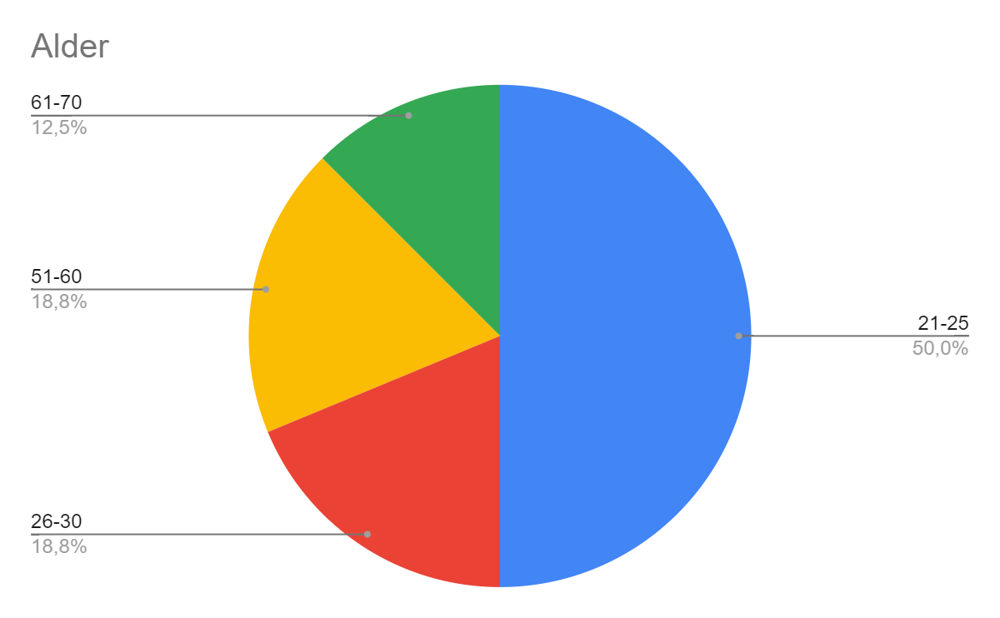

1. Header
P4: Project Testing
Date: 08.11.2022
Gruppe 39: Bjørn Aslak Dallmann, Oskar Edvardsson, Martin Tryggestad Larsen, Håkon Wiland, Ingvild Engen Økland
2. Administrative detaljer
Fiktiv klient: Bodø Fiskeklubb
Kontakt: bodø@fiskeklubb.no
3. Testingsdokument
For testingen så lagde vi en Google form som testpersonene skulle svare på. Dette var spørsmålene som ble stilt i spørreundersøkelsen:
- Alder
- Hvor often personen fisker
- Hvor enkelt nettsiden var å navigere
- Hvor godt de likte designet, med utdypning utdypende tekst
- Hva personen ikke like med designet
- I hvilken grad personen fant informasjonen på nettsiden nyttig
- Forslag til endringer og/eller andre kommentarer
Spørreundersøkelsen forsøker i de første spørsmålene å kartlegge hvilken målgruppe personen tilhører. Videre baserer spørsmålene seg på sidens funksjonalitet og design. Spørsmålene er utformet med poengskala så vel som muligheten til å legge ved kommentar er til stede. Dette gjør at vi får et oversiktlig innblikk av respondentenes syn på siden, i tillegg til at man kan få forslag til endringer. Vi fokuserte på å gjøre spørreundersøkelsen kort og enkel, for å gjøre terskelen for å teste siden lav. Siden er også av design minimalistisk, så omfanget av spørreundersøkelsen blir også deretter.
Live-testing
Live-testing ble utført ved at vi observerte mens respondentene utforsket nettsiden. Gjennom live-testingen så vi ingen tegn til at respondenten hadde problemer med å finne fram eller navigere til den siden han/hun ønsket.
4. Testingsmålgruppe
Ettersom at klienten vår er fiktiv, var det vanskelig å finne mange som passet målgruppen. Målgruppen er egentlig medlemmer/potensielle medlemmer av Bodø fiskeklubb. De fleste vi fikk svar fra var derfor ikke innenfor det vi anser som målgruppen. Det var flere av de som svarte på undersøkelsen som fisket sjeldent om de i det heletatt fisket, men ettersom nettsiden er ment for å være for både erfarne fiskere (klubbrekorder,blogg og statistikk) samt helt ferske fiskere (utlån av utstyr og fiskearter med kart) betyr ikke det nødvendigvis at de faller utenfor målgruppen. For å få nok tilbakemeldinger til å ha et godt utvalg, valgte vi å starte testingen tidlig.
Av de som svarte på undersøkelsen var det kunn 10% som fisket mer enn "noen ganger i året". De fleste var i aldersgruppen 21-25, og noen i aldersgruppene 26-30 og 51-60. Ettersom fiskeklubben er tenkt som et lavterskel tilbud for alle interessert i fiske, er ikke aldersgruppen det mest sentrale for brukergruppen.
5. Testplattform
Ettersom at nettsiden vår ikke er laget for mobile enheter, så ble respondentene anbefalt å teste på PC. Nettsiden ble testet på følgende nettlesere: Google Chrome, Microsoft Edge og Safari. Tilbakemelding fra respondentene tilsier at det ikke forekom noen merkbar forskjell ved testing på ulike nettlesere.
6. Sammendrag tilbakemelding
Navigasjon
De fleste tilbakemeldingene på navigasjonen var veldig positive. Ingen sa de syntes siden var vanskelig å navigere og som vist under var alle svarene mellom 3 og 5 på en skala fra 1 til 5.
Vi fikk noen tilbakemeldinger om plasseringen av navigasjonsbar på forsiden som vi kommer tilbake til senere.
Under live-testing fikk vi også inntrykk av at det ikke var vanskelig å finne fram til informasjonen man ønsket, og brukerne kom seg vanligvis dit de skulle på færrest mulige antall klikk.
Design
Respondentene meldte at de stort sett var fornøyde med designet i sin helhet. Som vist i diagramet under ga de fleste designet 4, og ingen ga mindre enn 3, på en skala fra 1 til 5. Designet var likevel det temaet vi fikk flest tilbakemeldinger med forslag til endringer. Både under livetesting og på tilbakemeldingene til skjemaet fikk vi inn kommentarer og endringsforslag om alt fra tekstutforming og skrifttype til fargevalg og logo.
Innhold
På spørsmål om informajsonen virket nyttig fikk vi den største variajsjonen i svarene. Som vist i søylediagramet svarte de fleste at informasjonen framstilt virket svært nyttig, mens én respondent svarte at informasjonen virket helt unyttig. En mulig feilkilde for dette spørsmålet er at det ikke ble presisert for alle testerne at man skulle se bort fra latin i brødtekster og heller forholde seg til de overordnede temaene. Av endringsforslagene vi fikk var det ett forslag som gikk ut på å legge til/endre innholdet.
7. Vår respons
Når vi ser på tilbakemeldingene på undersøkelsen, går det igjen at nettsidens design kunne vært forbedret. Generell utforming av tekst, fargekombinasjoner og estetikk kunne man gjerne endret, selv om siden har som mål å være minimalistisk.
- Forslag til endringer som ble implementert etter testing:
- Endre tekstlogo fra svart til hvitt
- Større mellomrom mellom header og innhold på delsider
- Endring av filstørrelser for raskere innlasting
- Endring av animasjon på forsiden
- Forslag vi hadde vurdert å implementere om vi hadde mer tid
- Endringer på designet (eks. fargekombinasjoner)
- Fiskekart vises og skjules med samme knapp
- Endre skrifttype på underoverskrifter???
- Flyttet navigasjonsbaren på forsiden øverst
- Innloggingsfunksjon
- Større bilder
- Legge til informasjon om arrangement, lovverk, andre nettsider o.l.
8. Selvrefleksjon
Vi lærte oss mye forskjellig under dette prosjektet. Fremfor alt lærte vi hvordan man lager en nettside
fra bunnen av. Videre så utdypet vi vår kunnskap i HTML, CSS og Javascript.
Før vi begynte hadde vi ganske ulikt utgangspunkt med tanke på erfaring i webteknologi, og vi var sterke og svake på ulike
områder, så vi har lært mye av hverandre.
For versjonshåndtering så brukte vi GitHub under prosjektet. I utgangspunktet følte vi det var litt vanskelig å bruke,
men videre inn i prosjektet så lærte vi oss mer om det og til slutt syntes vi at det var et veldig nyttig verktøy.
Som i alle gruppearbeid så fikk vi også trene på å samarbeide, planlegging og kommunikasjon innad i gruppa.